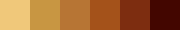
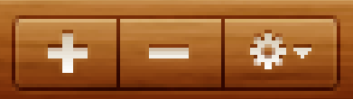

While the concepts of decoration areas and decoration painters introduced in the second phase and implemented in the third phase are one of the most powerful features in Substance, they are part of the more comprehensive package of settings designed to facilitate creation of consistent and configurable visuals for modern graphical user interfaces. In Substance terminology it is called a skin.
The skin definition in Substance consists of the following:
This phase of Cookbook UI implementation will focus on creating the other parts of the skin, including color schemes, color scheme bundles, the gradient painter and the border painter.
A color scheme is a set of information that allows painting a control in a specific visual state. In general, a color scheme defines a collection of colors that are used by the various Substance painters to paint different control areas (such as background fill, border etc) under a specific visual state.
The color schemes were implicitly used in the previous phase to drive the colorization of the decoration area textures. At the most basic level a color scheme can be thought of as a palette that provides colors to the different painters. Each color scheme defines seven basic colors, six for background and one for foreground. In addition, a color scheme exposes derived colors that are used for painting watermarks, text selections, focus rings and more. The derived colors are usually implemented as a combination of one or more basic colors and can be overriden by the custom skin.
The main two color schemes for Cookbook UI are Golden Brown and Dark Brown. Here are their background palettes:
At the present moment Substance does not provide a visual tool to create a color scheme from an image palette. These two color schemes were created manually using the simple image editor and color pick tool.
Looking at the Cookbook UI design we can see that Golden Brown color scheme is used for:
The Dark Brown color scheme is used for:
The definition of color scheme bundles in the custom Substance skin will use these two color schemes as the main building blocks. Dark Brown will be used for:
GENERAL area,
controls in default and disabled state. Disabled controls
will be painted with 70% opacity.PRIMARY_TITLE_PANE,
TOOLBAR and
FOOTER areas,
controls in active states. This will make the selected
button in the toolbar painted with dark background.GENERAL area,
controls in active state. This will paint the sidebar scroll bar
since the enabled scroll bars are painted in active state
(this is true for all Substance skins).PRIMARY_TITLE_PANE,
TOOLBAR and
FOOTER areas,
controls in default and disabled state. Disabled controls
will be painted with 70% opacity.For the comparison, here is a part of Cookbook UI:

And here is its implementation with a custom Substance skin:

Note the correct color schemes for the relevant decoration areas, including the background, textures, buttons, scroll bar and slider. The only discrepancy comes from the slider track - by design Substance uses the same default (Golden Brown) color scheme to paint its track unless the mouse is over the slider.
In addition to the two color schemes above, we define three color schemes
to be used on NONE area type. In case of
Cookbook UI these schemes are only relevant for the search text field in the second
footer panel (marked as NONE to
create the custom visuals). Since every Substance skin must define a color
scheme bundle for the NONE area type,
this is a step that you can not omit. Here are the palettes for the active,
default and disabled color schemes of NONE:
Here is a zoomed version of footer buttons in Cookbook UI:
Analyzing the visuals, we can see:
The implementation has a custom gradient painter and a custom border painter. Base Substance painters provide extension points for computing the relevant stop point colors, handling all the rest of the logic (anti-aliasing, stroke widths, insets, scaling gaps, caching etc). All we need to do in our custom painter implementation is to emulate the colors of the target design.
Here are the original design and the custom Substance implementation side-by-side: